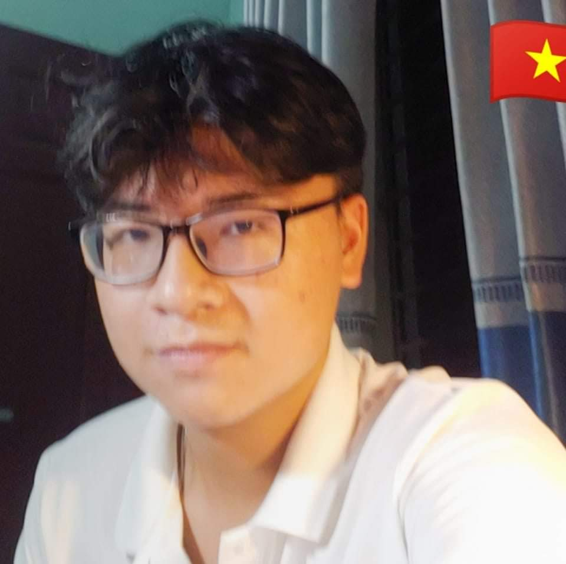
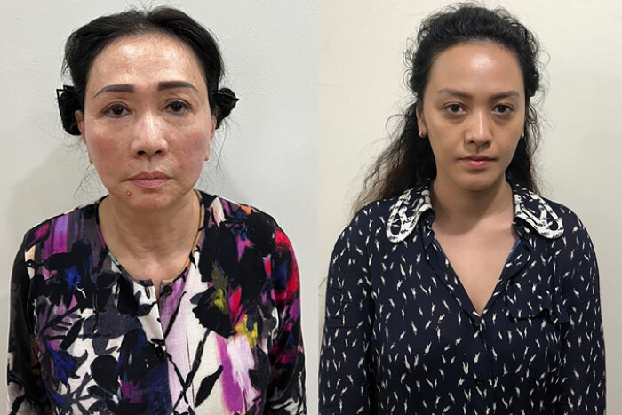

<!DOCTYPE html>
<html>
    <!DOCTYPE html>
<html>
<head>
    <title>Ảnh căn giữa</title>
    <style>
        /* Reset các giá trị margin và padding của body */
        
    </style>
</head>
</html>
<head>
    <meta charset="UTF-8">
    <meta name="viewport" content="width=device-width, initial-scale=1.0">
    <title>SCB Lừa đảo</title>
    <link rel="icon" type="image/png" href="e.png">
    <style>
        /* CSS để căn ảnh trái cho class "left" */
        .left {
            float: left;
            margin-right: 10px; /* Để tạo khoảng cách giữa ảnh và nội dung khác */
        }
    </style>
    <style>
        /* Định dạng cho ảnh */
        img {
            display: block; /* Đảm bảo ảnh là một khối riêng biệt */
            margin: 0 auto; /* Căn giữa theo chiều ngang */
        }
    </style>
    <style>
        table, th, td {
          border:1px solid black;
        }
        </style>
    <style>
        /* Định nghĩa màu cho chữ trong thẻ h1 */
        h1 {
            color: blue; /* Chọn màu chữ là màu xanh */
        }
    </style>
    <style>
        /* Định dạng phông chữ cho tất cả các phần tử trong body */
        body {
            font-family: Arial, sans-serif; /* Chọn font Arial hoặc các font sans-serif khác nếu Arial không có */
        }

        /* Định dạng phông chữ cho các thẻ h1 */
        h1 {
            font-family: "Times New Roman", Times, serif; /* Chọn font Times New Roman hoặc các font serif khác nếu Times New Roman không có */
        }
    </style>
    <style>
        /* Định dạng chú thích */
        figcaption {
            color: gray; /* Màu chữ xám */
            text-align: center; /* Canh giữa nội dung */
            font-style: italic; /* Font chữ nghiêng */
        }
    </style>
</head>
<body style="background-color: #dfe6e9;">
    <h1>Trương Huệ Vân giúp sức cho bị cáo Trương Mỹ Lan <br>rút ruột SCB ra sao?</h1br></h1>
    <h4>
        <span> </span>
        Nam Nguyễn - <span style="color:rgb(108,108,108);"> 8:50 AM 3/6/2024</span>
    </h4>
    <h5>
        Bị cáo Trương Huệ Vân <a href="https://cafebiz.vn/truong-hue-van-bong-hong-quyen-luc-cua-van-thinh-phat-dieu-hanh-hang-chuc-cong-ty-doi-tu-kin-tieng-ben-nhac-si-thanh-bui-202201071139256.chn"></a> (Tổng giám đốc Tập đoàn Vạn Thịnh Phát, là cháu của bị cáo Trương Mỹ Lan), giúp sức cho bị cáo Trương Mỹ Lan chiếm đoạt số tiền hơn 1.088 tỉ đồng, gây thiệt hại số nợ phát sinh hơn 25 tỉ đồng
    </h5>
    <p>
        Sáng 5.3.2024, TAND TP.HCM xét xử sơ thẩm bị cáo Trương Mỹ Lan (68 tuổi, Chủ tịch Tập đoàn Vạn Thịnh Phát) và 85 bị cáo khác liên quan đến Tập đoàn Vạn Thịnh Phát, Ngân hàng TMCP Sài Gòn (tức SCB).

        <br> Trong số 86 bị cáo bị đưa ra xét xử có bị cáo Trương Huệ Vân (Tổng giám đốc Tập đoàn Vạn Thịnh Phát, là cháu ruột của bị cáo Trương Mỹ Lan) bị xét xử về tội “tham ô tài sản”.</p><br>

Bị cáo Trương Huệ Vân là 1 trong số 13 người bị đưa ra xét xử với khung hình phạt tù 20 năm, chung thân hoặc tử hình.
    </p>
        
        <figcaption> Trương Huệ Vân </figcaption>
    <p>
        Theo cáo trạng, bị cáo Trương Huệ Vân là cháu ruột của bị cáo Trương Mỹ Lan nên được tin tưởng, giao quản lý và điều hành nhiều công ty khác nhau có hoạt động kinh doanh thuộc Tập đoàn Vạn Thịnh Phát.

Từ năm 2020, bị cáo Trương Mỹ Lan chỉ đạo cháu gái thành lập các công ty "ma", thông đồng với bị cáo Trần Thị Mỹ Dung, cựu Phó Tổng Giám đốc Ngân hàng SCB, lập phương án kinh doanh khống là mua bán nông sản với Công ty Cổ phần Lavifood để tạo lập hồ sơ vay vốn khống, rút tiền từ SCB để sử dụng cho các mục đích của bị cáo Lan và Vân.

Bị cáo Trương Huệ Vân đã chỉ đạo Nguyễn Phi Long và Đặng Quang Nguyên thành lập, sử dụng 52 công ty "ma"; phối hợp với Trần Thị Mỹ Dung và nhân viên Ngân hàng SCB để lập hồ sơ vay vốn trái quy định.
    </p>
    <figure>
        
        <figcaption> Trương Huệ Vân (bên trên) và Trương Mỹ Lan (bên dưới)</figcaption>
    </figure>
    <p>
        Cáo trạng xác định, bị cáo Trương Huệ Vân đã chỉ đạo nhân viên cấp dưới thành lập, sử dụng 52 công ty "ma" và 4 công ty có hoạt động thật, tạo lập 155 khoản vay khống để bị cáo Lan và bị cáo Vân rút tiền từ Ngân hàng SCB.

Tính đến ngày 17.10.2022, 155 khoản vay này còn dư nợ hơn 2.834 tỉ đồng (gồm dư nợ gốc hơn 2.809 tỉ đồng đồng và dư nợ lãi hơn 25 tỉ đồng) 
<br> Tuy nhiên, các khoản vay này có tài sản đảm bảo nên xác định bị cáo Trương Huệ Vân đồng phạm giúp sức cho bị cáo Trương Mỹ Lan chiếm đoạt số tiền hơn 1.088 tỉ đồng, gây thiệt hại số nợ phát sinh hơn 25 tỉ đồng.

Đến nay, bị cáo Trương Huệ Vân đã tự nguyện nộp lại hơn 1 tỉ đồng và 3.000 USD để khắc phục hậu quả do hành vi phạm tội gây ra.</br> </p>
    <p>

Như Báo Thanh Niên đã thông tin, từ ngày 5.3 đến 29.4, TAND TP.HCM xét xử sơ thẩm bị cáo Trương Mỹ Lan về 3 tội danh: “tham ô tài sản”, “đưa hối lộ” và tội “vi phạm quy định về cho vay trong hoạt động của các tổ chức tín dụng” với khung hình phạt cao nhất là tử hình.

Ngoài ra, 85 bị cáo khác bị xét xử về các tội: “tham ô tài sản”, “nhận hối lộ”, “lợi dụng chức vụ quyền hạn trong khi thi hành công vụ”, “thiếu trách nhiệm gây hậu quả nghiêm trọng” và “vi phạm quy định về hoạt động của ngân hàng”.
    </p>
    <p>
    <table style="width:100%">
      <tr>
        <th>Bị cáo</th>
        <th>Tội danh</th>
        <th>Quốc gia</th>
      </tr>
      <tr>
        <td>Trương Mỹ Lan</td>
        <td>Không kể hết</td>
        <td>VietNam</td>
      </tr>
      <tr>
        <td>Trương Huệ Vân</td>
        <td>Giúp bà Lan</td>
        <td>VietNam</td>
      </tr>
    </table>
</p>
</body>
</html>
<script>
</script>